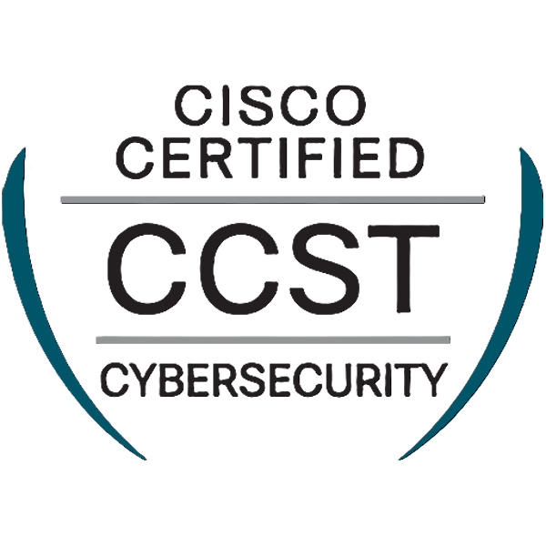
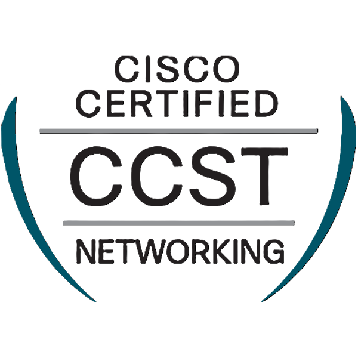
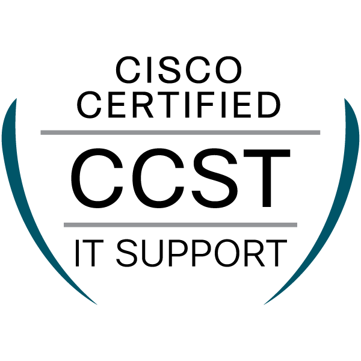

Leadership
Sophomore Representative, Technology Committee
Student Government Association · Gannon University
Cybersecurity student
B.S. Cybersecurity student at Gannon University. CompTIA Security+ certified, with hands-on experience across enterprise endpoints, public Wi-Fi infrastructure, AWS, and OT vulnerability assessment.
01
I didn’t grow up with a technical background. I found this field on my own.
It started in high school, in a magnet program where two years of networking and two years of cybersecurity turned a passing interest into something I knew I wanted to do for a living.
So I went and got real experience. My first internship came the summer after junior year, and I was soon trusted with a leadership role and a hand in several projects. Since then I’ve worked through cyber operations, enterprise desktop support, and municipal broadband, and I earned my Security+ before most people in the field do.
Today I’m a cybersecurity major at Gannon, a Senior Student Technician on the ITS team, and a sophomore representative on SGA’s Technology Committee. I’m ambitious about where this career goes, and I like learning by doing the work.
02
Gannon University – ITS Department · Erie, PA
Baltimore City Office of Information Technology (BCIT) · Baltimore, MD
Asurion · Baltimore, MD
Amergis Healthcare Staffing · Columbia, MD
Technology Advancement Center (TAC) · Columbia, MD
DALY Computers Inc. · Baltimore, MD
03
Leadership
Student Government Association · Gannon University
Greek life
Gannon University
04
Earned 04/2025
Core cybersecurity knowledge: risk management, network security, incident response, vulnerabilities, and securing enterprise environments.

05/2024

05/2025

05/2025
10/2024
10/2024
05
Gannon University · Erie, PA
Eastern Technical High School · Baltimore, MD
06
07
Two versions, tailored to the role you’re hiring for.
08